| Center | n | Frequency (%) |
|---|---|---|
| The Mediation Center of the Pacific | 319 | 73.502304 |
| West Hawai'i Mediation Center | 62 | 14.285714 |
| Maui Mediation Services | 23 | 5.299539 |
| Kaua'i Economic Opportunity Mediation Program | 17 | 3.917051 |
| Ku'ikahi Mediation Center | 13 | 2.995392 |
Act 278 Data Report
Introduction:
WORK IN PROGRESS: These data cover mediations that have occurred for the Act 278 period, starting in 2/5/2026. The descriptive statistics consist of data collected from the MCP as of 3/16/2026. 39 days have passed since the beginning of the program. I made up some data for a few cases to make sure there was enough in each group to do analyses, so numbers or comparisons should not be taken literally. I also imputed outcomes for eviction filings and summary possession judgments until we are able to match these outcomes with the JIMS data.
Section 1: Data Requested by the Judiciary
1. Total number of landlord notices received:
As of 3/16/2026, there have been 438 landlord forms received and 434 unique disputes. There are 4 duplicated or repeat notices. Note that the number of actual notices may be higher, since not every dispute has a landlord form for various reasons.
1a. Notices by center
HUD Cases
NOTE: this is simulated data.
| HUD_Case | n | Frequency (%) |
|---|---|---|
| 0 | 373 | 85.15982 |
| 1 | 65 | 14.84018 |
2. Number of mediations scheduled:
There have been 45 mediation sessions scheduled. 43 of these are unique landlord/tenant disputes. 2 scheduled mediations were either re-scheduled sessions or a case that required multiple sessions.
2a. Scheduled mediations per center
| Mediation_Center | n | Frequency (%) |
|---|---|---|
| The Mediation Center of the Pacific (Oahu) | 33 | 76.744186 |
| Maui Mediation Services (Maui, Molokai, Lanai) | 7 | 16.279070 |
| KEO Mediation Center (Kauai) | 2 | 4.651163 |
| Kuikahi Mediation Center (East Hawaii) | 1 | 2.325581 |
2b. Number of No Shows (usually tenant) at Mediation:
| no_show | n | Frequency (%) |
|---|---|---|
| Mediation | 39 | 90.697674 |
| No Show | 4 | 9.302326 |
3,4. Total number of mediations that resulted in an agreement and proportion of yes/no agreements
| mediation_agreement | n | Frequency (%) |
|---|---|---|
| Yes | 36 | 92.307692 |
| No | 3 | 7.692308 |
Of the mediated cases (39 total), 3 cases did not result in an agreement (7.69% of mediated cases). 36 cases did reach an agreement of some kind (92.31% of mediated cases).
5,6. Number of agreements that allow the tenant to stay in / vacate the unit
Of the cases that resulted in agreements, 31 involved agreements that allowed the tenant to remain in the unit (86% of agreements), while 6 cases involved agreements resulting in the tenant vacating the unit (17% of agreements). Of the agreements that allowed tenants to stay, 27 involved a payment plan (87% of the agreements allowing tenant to stay in unit).
For cases involving move out agreements, tenants had an average of 29.25 days to vacate the unit.
NOTE: Due to data entry error, there was at least one case where the mediator selected that the tenant had an agreement to stay in unit and also the tenant was going to vacate the unit so the percentages add up to more than 100%. To be addressed in the future.
7. Average number of days from initial request of mediation to date that mediation occurs
There is an average of 12.29 days from the notice and the date that mediation occurs.
8a. Monthly Rent
Mean Monthly Rent (All Notices): $1878.78
Median Monthly Rent (All Notices): $1547
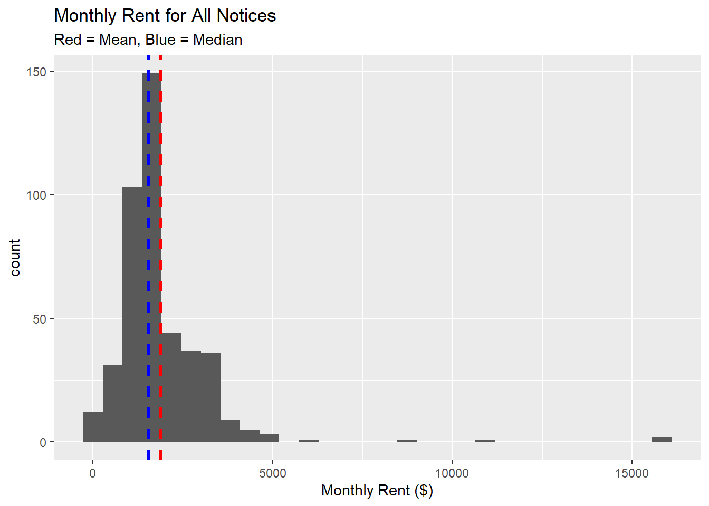
Mean Monthly Rent (Scheduled Mediations): $1974.82
Median Monthly Rent (Scheduled Mediations): $1871.5
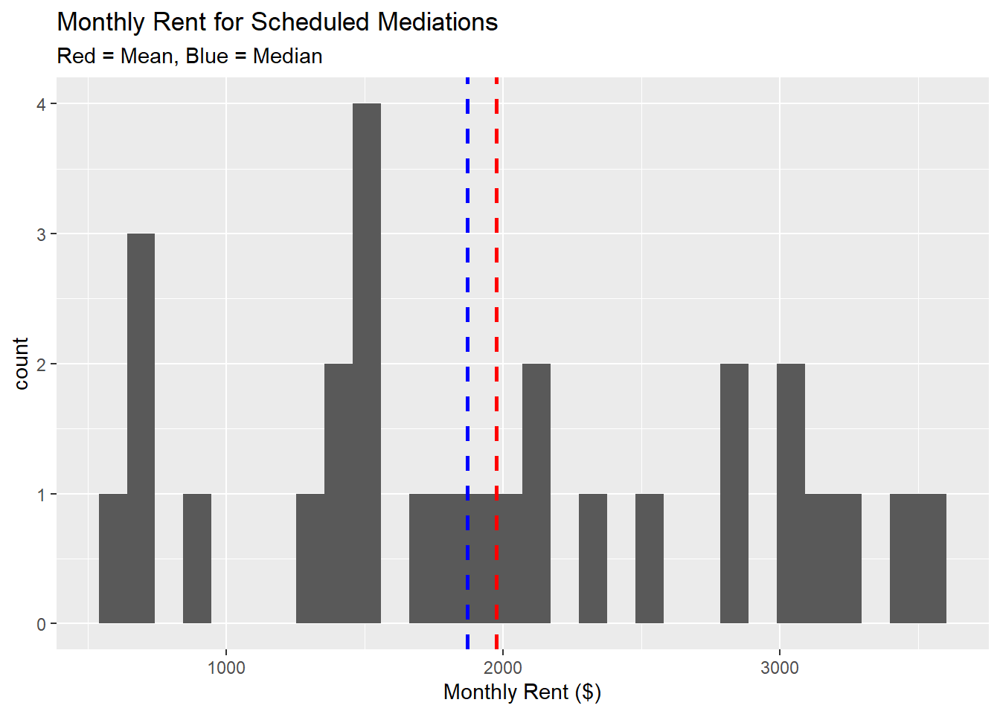
8b. Amount of Back Rent Owed
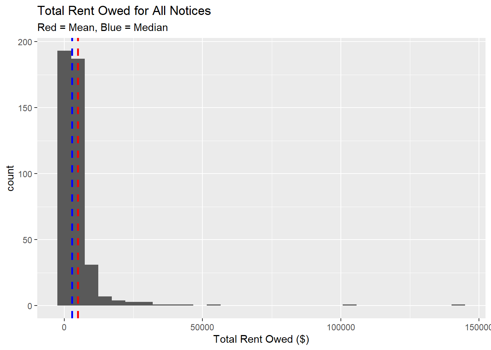
Mean Back Rent Owed (All Notices): $4885.66
Median Back Rent Owed (All Notices): $2830
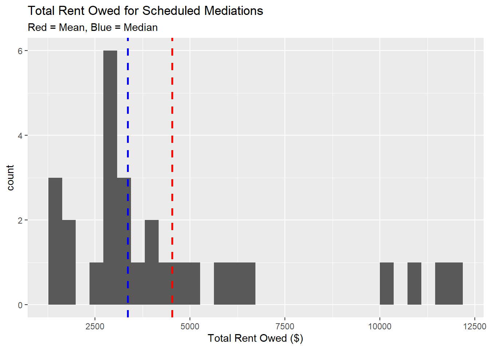
Mean Back Rent Owed (Scheduled Mediations): $4529.89
Median Back Rent Owed (Scheduled Mediations): $1871.5
Months Behind on Rent
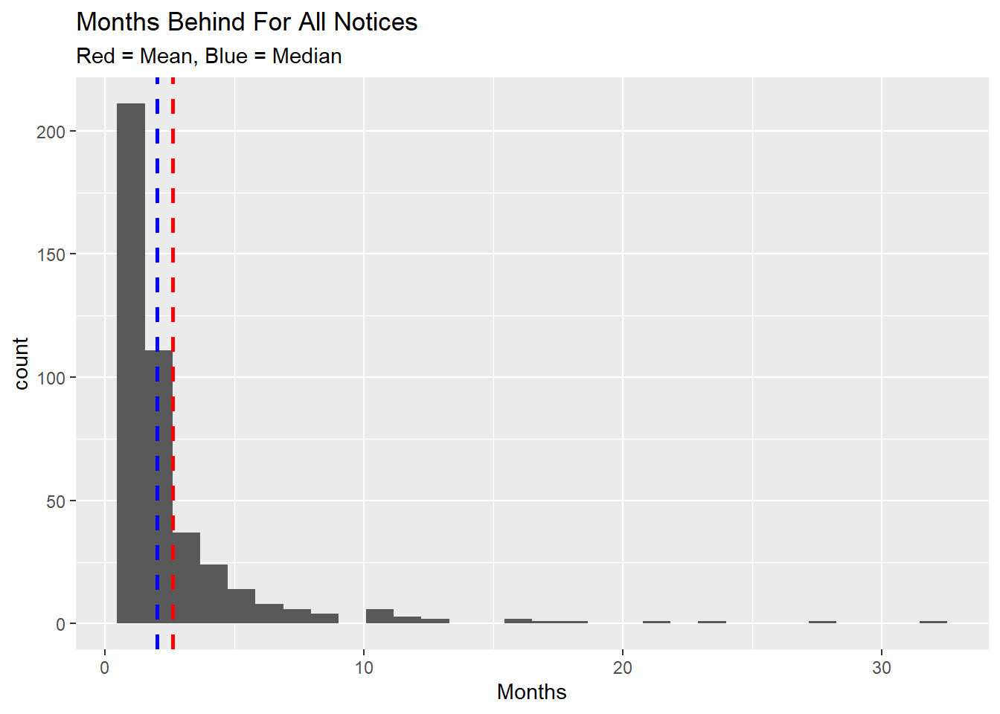
Mean Months Behind (All Notices): 2.61
Median Months Behind (All Notices): 2
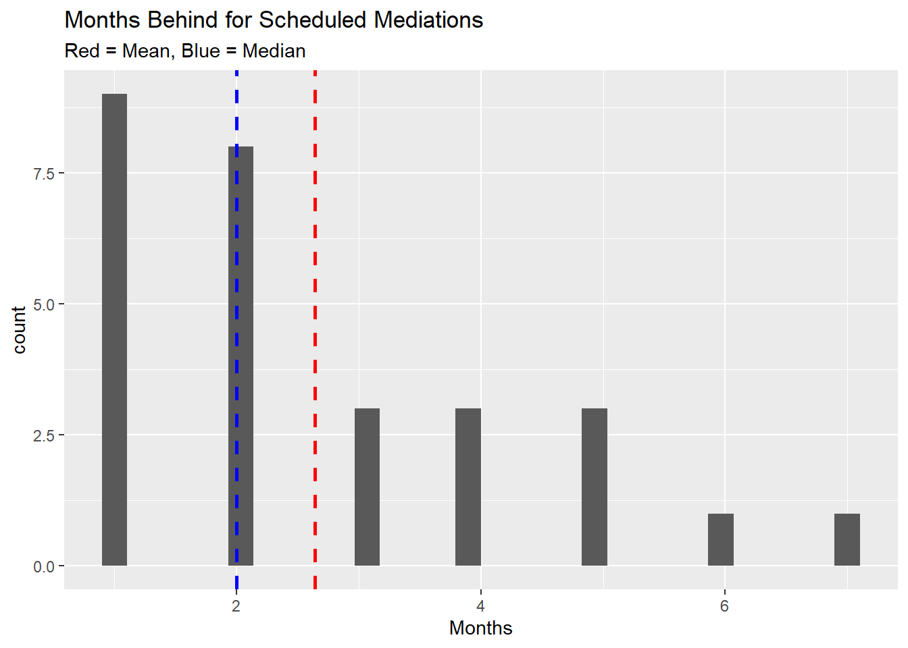
Mean Months Behind (Scheduled Mediations): 2.64
Median Months Behind (Scheduled Mediations): 2
8c. Zip Code of Rental Unit
Zip code frequency for all notices
Show the code
hawaii_zipcode <- search_state('HI')
hawaii_zipcode$zipcode <- as.numeric(hawaii_zipcode$zipcode)
zip_code_all <- tenant_intake %>% group_by(zipcode) %>% summarise(n = n()) %>% mutate('Frequency (%)' = n*100 / sum(n)) %>% arrange(desc(n))
zip_code_all$zipcode <- as.numeric(zip_code_all$zipcode)
zip_code_all %>% left_join(hawaii_zipcode) %>% select(zipcode, n, 'Frequency (%)', major_city, county, median_household_income, population) %>% kable(col.names = c("ZipCode", "N", "Frequency (%)", "City", "County", "Median Income", "Population"), align=rep('c', 7)) %>% kable_material(c("striped", "hover")) | ZipCode | N | Frequency (%) | City | County | Median Income | Population |
|---|---|---|---|---|---|---|
| 96706 | 37 | 26.6187050 | Ewa Beach | Honolulu County | 86093 | 62730 |
| 96740 | 31 | 22.3021583 | Kailua Kona | Hawaii County | 61875 | 33321 |
| 96720 | 10 | 7.1942446 | Hilo | Hawaii County | 52822 | 46165 |
| 96816 | 6 | 4.3165468 | Honolulu | Honolulu County | 75448 | 49368 |
| 96753 | 5 | 3.5971223 | Kihei | Maui County | 60458 | 26892 |
| 96797 | 4 | 2.8776978 | Waipahu | Honolulu County | 81897 | 72289 |
| 96744 | 3 | 2.1582734 | Kaneohe | Honolulu County | 85608 | 54247 |
| 96761 | 3 | 2.1582734 | Lahaina | Maui County | 64603 | 22156 |
| 96778 | 3 | 2.1582734 | Pahoa | Hawaii County | 31422 | 14409 |
| 96786 | 3 | 2.1582734 | Wahiawa | Honolulu County | 53706 | 40859 |
| 96792 | 3 | 2.1582734 | Waianae | Honolulu County | 53059 | 48519 |
| 96793 | 3 | 2.1582734 | Wailuku | Maui County | 75056 | 29549 |
| 96822 | 3 | 2.1582734 | Honolulu | Honolulu County | 63379 | 45007 |
| 96826 | 3 | 2.1582734 | Honolulu | Honolulu County | 42460 | 30842 |
| 96707 | 2 | 1.4388489 | Kapolei | Honolulu County | 96611 | 38817 |
| 96732 | 2 | 1.4388489 | Kahului | Maui County | 62981 | 24816 |
| 96738 | 2 | 1.4388489 | Waikoloa | Hawaii County | 73285 | 6609 |
| 96766 | 2 | 1.4388489 | Lihue | Kauai County | 66083 | 14683 |
| 96795 | 2 | 1.4388489 | Waimanalo | Honolulu County | 68563 | 10034 |
| 96813 | 2 | 1.4388489 | Honolulu | Honolulu County | 60665 | 22881 |
| 96817 | 2 | 1.4388489 | Honolulu | Honolulu County | 52532 | 54628 |
| 96825 | 2 | 1.4388489 | Honolulu | Honolulu County | 108425 | 30263 |
| 96701 | 1 | 0.7194245 | Aiea | Honolulu County | 83255 | 40281 |
| 96734 | 1 | 0.7194245 | Kailua | Honolulu County | 89016 | 50746 |
| 96743 | 1 | 0.7194245 | Kamuela | Hawaii County | 58392 | 12160 |
| 96749 | 1 | 0.7194245 | Keaau | Hawaii County | 40201 | 17047 |
| 96782 | 1 | 0.7194245 | Pearl City | Honolulu County | 78848 | 40496 |
| 96814 | 1 | 0.7194245 | Honolulu | Honolulu County | 54085 | 18721 |
Zip code frequency for all scheduled mediations
| ZipCode | N | Frequency (%) | City | County | Median Income | Population |
|---|---|---|---|---|---|---|
| 96706 | 10 | 38.461539 | Ewa Beach | Honolulu County | 86093 | 62730 |
| 96744 | 2 | 7.692308 | Kaneohe | Honolulu County | 85608 | 54247 |
| 96753 | 2 | 7.692308 | Kihei | Maui County | 60458 | 26892 |
| 96786 | 2 | 7.692308 | Wahiawa | Honolulu County | 53706 | 40859 |
| 96826 | 2 | 7.692308 | Honolulu | Honolulu County | 42460 | 30842 |
| 96720 | 1 | 3.846154 | Hilo | Hawaii County | 52822 | 46165 |
| 96732 | 1 | 3.846154 | Kahului | Maui County | 62981 | 24816 |
| 96761 | 1 | 3.846154 | Lahaina | Maui County | 64603 | 22156 |
| 96792 | 1 | 3.846154 | Waianae | Honolulu County | 53059 | 48519 |
| 96793 | 1 | 3.846154 | Wailuku | Maui County | 75056 | 29549 |
| 96795 | 1 | 3.846154 | Waimanalo | Honolulu County | 68563 | 10034 |
| 96797 | 1 | 3.846154 | Waipahu | Honolulu County | 81897 | 72289 |
| 96817 | 1 | 3.846154 | Honolulu | Honolulu County | 52532 | 54628 |
8d. Household Size
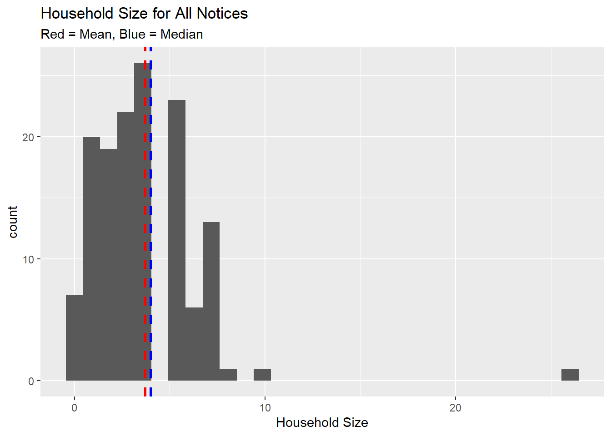
Mean Household Size (All Notices): 3.7
Median Household Size (All Notices): 4
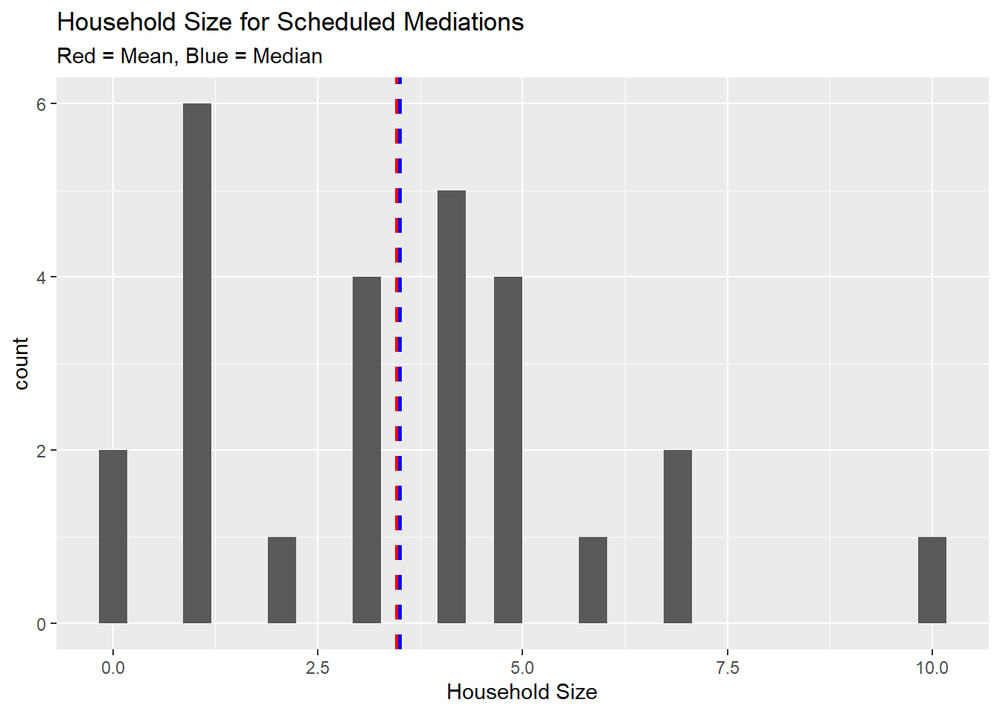
Mean Household Size (Scheduled Mediations): 3.46
Median Household Size (Scheduled Mediations): 3.5
8e. Age of Lead Tenant
Mean Lead Tenant Age (All Notices): 42.56
Median Lead Tenant Age (All Notices): 39
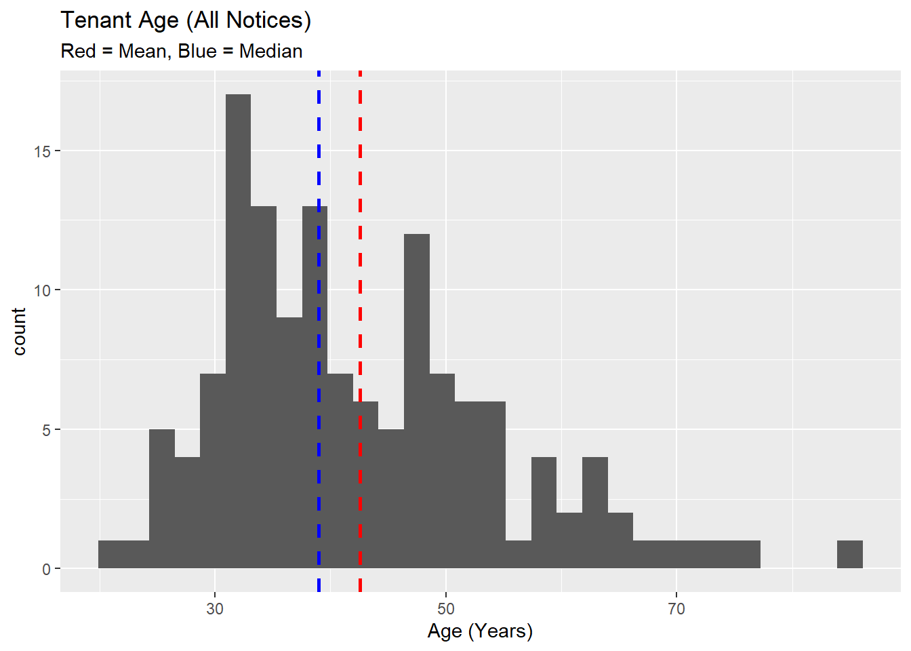
Mean Lead Tenant Age (All Notices): 41.76
Median Lead Tenant Age (All Notices): 36
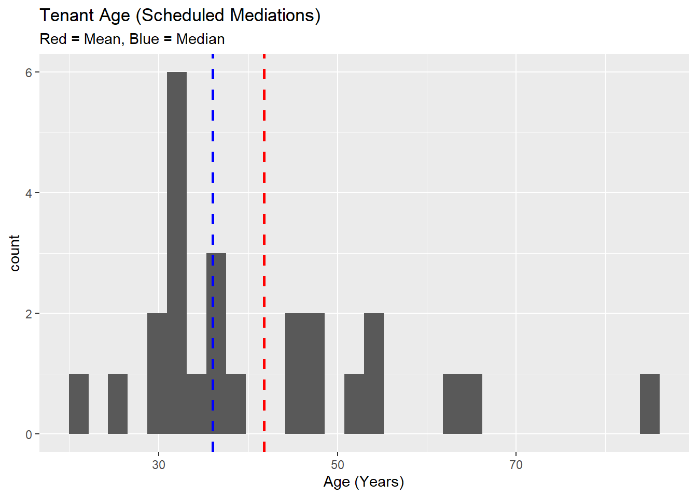
8f. Self-reported Race of Lead Tenant
| Tenant_Race | n | Frequency (%) |
|---|---|---|
| Hawaiian | 41 | 29.4964029 |
| Pacific Islander | 33 | 23.7410072 |
| Caucasian | 20 | 14.3884892 |
| Filipino | 11 | 7.9136691 |
| Samoan | 10 | 7.1942446 |
| Hispanic | 7 | 5.0359712 |
| African American | 6 | 4.3165468 |
| Other | 3 | 2.1582734 |
| Prefer Not to Say | 2 | 1.4388489 |
| Tongan | 2 | 1.4388489 |
| Chinese | 1 | 0.7194245 |
| Japanese | 1 | 0.7194245 |
| Native American | 1 | 0.7194245 |
| NA | 1 | 0.7194245 |
Self reported race of tenant opening the case for all scheduled mediations
| Tenant_Race | n | Frequency (%) |
|---|---|---|
| Hawaiian | 8 | 32 |
| Pacific Islander | 5 | 20 |
| Hispanic | 3 | 12 |
| Samoan | 3 | 12 |
| African American | 2 | 8 |
| Caucasian | 2 | 8 |
| Filipino | 1 | 4 |
| Tongan | 1 | 4 |
8g. Gender of Tenant
| Gender | n | Frequency (%) |
|---|---|---|
| Female | 96 | 69.06475 |
| Male | 43 | 30.93525 |
Gender of Tenant, mediated cases
| Gender | n | Frequency (%) |
|---|---|---|
| Female | 17 | 65.38462 |
| Male | 9 | 34.61538 |
8h. Monthly Household Income
Mean Monthly Income (All Notices): $3311.35
Median Monthly Income (All Notices): $3289
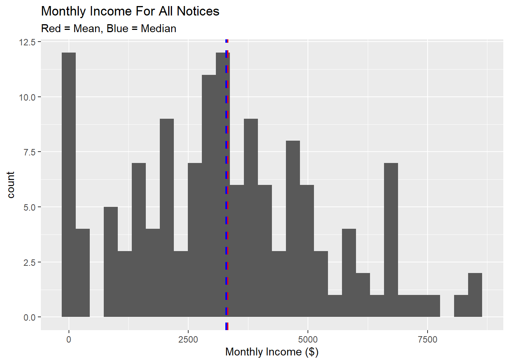
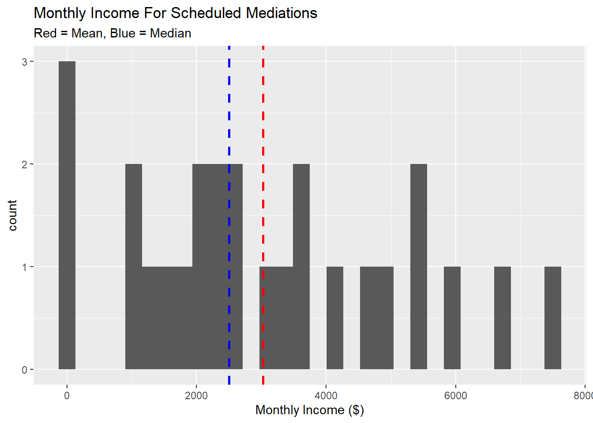
Mean Monthly Income (Scheduled Mediations): $3028.6858974
Median Monthly Income (Scheduled Mediations): $2500
Rent Burdened Status
A tenant considered is rent burdened if they are paying more than 30% of their monthly income on rent alone. A renter is considered severely rent burdened if they are paying more than 50% of their monthly income on rent. The mean percentage of monthly income taken up by rent is 72%.
89% of clients who went through mediation are considered rent burdened.
74% of clients who went through mediation are considered severely rent burdened.
Rent Burdened Status of Mediated Cases
| RentBurdened | n | Frequency |
|---|---|---|
| 1 | 17 | 89.47368 |
| 0 | 2 | 10.52632 |
| SevereRentBurden | n | Frequency |
|---|---|---|
| 1 | 14 | 73.68421 |
| 0 | 5 | 26.31579 |
Rental Assistance
| rental_assistance | n | Frequency |
|---|---|---|
| No | 28 | 84.84848 |
| Yes | 5 | 15.15152 |
For those receiving rental assistance, the mean total amount of rental assistance received is $2557.6533333. The mean amount of rental assistance tenants received per month was $1572.9933333.
8i. Current Employment Status for All Notices
Note: 1 = Employed, 0 = Unemployed
| currently_employed | n | Frequency (%) |
|---|---|---|
| 1 | 101 | 72.66187 |
| 0 | 38 | 27.33813 |
Current Employment Status for Mediated Cases
| currently_employed | n | Frequency (%) |
|---|---|---|
| 1 | 17 | 65.38462 |
| 0 | 9 | 34.61538 |
8j. Employment Lost in the Past Year for All Notices
Note: 1 = Lost Employment in Past Year, 0 = Did Not Lose Employment
| employment_lost | n | Frequency (%) |
|---|---|---|
| 0 | 87 | 62.58993 |
| 1 | 52 | 37.41007 |
Employment Lost In Past Year for Mediated Cases
| employment_lost | n | Frequency (%) |
|---|---|---|
| 0 | 15 | 57.69231 |
| 1 | 11 | 42.30769 |
9. Total number of successful agreements where both parties meet the terms of the agreement
| mediation_agreement_success | n | Frequency (%) |
|---|---|---|
| 1 | 15 | 68.18182 |
| 0 | 7 | 31.81818 |
We consider an agreement between the landlord and tenant successful if there is an agreed upon mediation agreement and an eviction is not subsequently filed in court.
WORK IN PROGRESS: For actual data, need to join data frame with a current a caselist that match up with tenant names, as well as with a list that has JP Docket + word “possession” search for summary possession to find outcomes for eviction and summary possession filings. Temporarily, I have made up data for eviction filing and summary possession judgments. 80% of all cases result in an eviction filing, and of these, 75% result in a summary possession.
10. Total mediated agreements that ultimately led to judgments for summary possession
| summary_possession | n | Frequency (%) |
|---|---|---|
| 1 | 12 | 54.54545 |
| 0 | 10 | 45.45455 |
Requested information that cannot be derived from the existing forms
Other subcategories of agreements reached, not specifically described herein, as reasonably defined to the Judiciary’s satisfaction.
Average cost of each mediation;
Total cost of the Program to the State of Hawaii;
Total cost of the Program process to each individual landlord and tenant if mediation is scheduled.
Section 2: Further Analyses
Measures of Interest: Amount of Back Rent Owed, Number of Months Behind on Rent, Monthly Rent, Monthly Income
Case Types: Mediation is held (Yes/No), Case Settled (Yes/No), Mediation comes to an agreement (Yes/No), Presence of a Payment Plan (Yes/No), Presence of Rental Assistance (Yes/No)
Outcomes: Successful Payment Plan (Yes/No), Eviction Filed (Yes/No), Summary Possession Judgment (Yes/No)
Correlation between Amount Owed and Months Behind on Payment (All Notices)
Total Amount Owed and Months Behind should be linked (Total Amount Owed = Monthly Rent * Months Behind), but outliers and other factors can drive the strength of the relationship.
Pearson's product-moment correlation
data: unique_disputes$Total_Rent_Owed and unique_disputes$Months_Behind
t = 13.116, df = 432, p-value < 2.2e-16
alternative hypothesis: true correlation is not equal to 0
95 percent confidence interval:
0.4627853 0.5977675
sample estimates:
cor
0.5336667 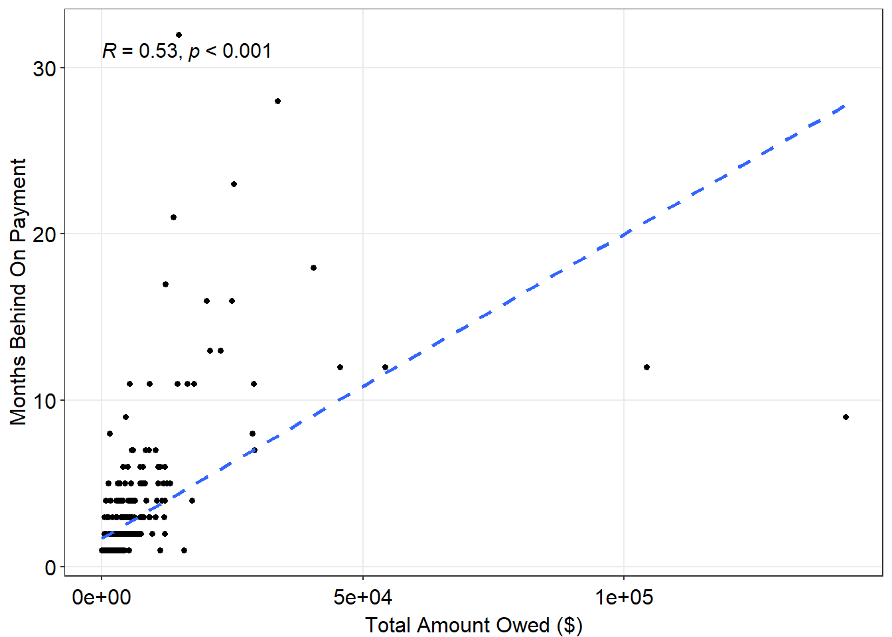
Correlation between Amount Owed and Months Behind on Payment (Mediated Cases)
Pearson's product-moment correlation
data: df$Total_Rent_Owed and df$Months_Behind
t = 2.8671, df = 26, p-value = 0.008107
alternative hypothesis: true correlation is not equal to 0
95 percent confidence interval:
0.1432274 0.7297557
sample estimates:
cor
0.4901151 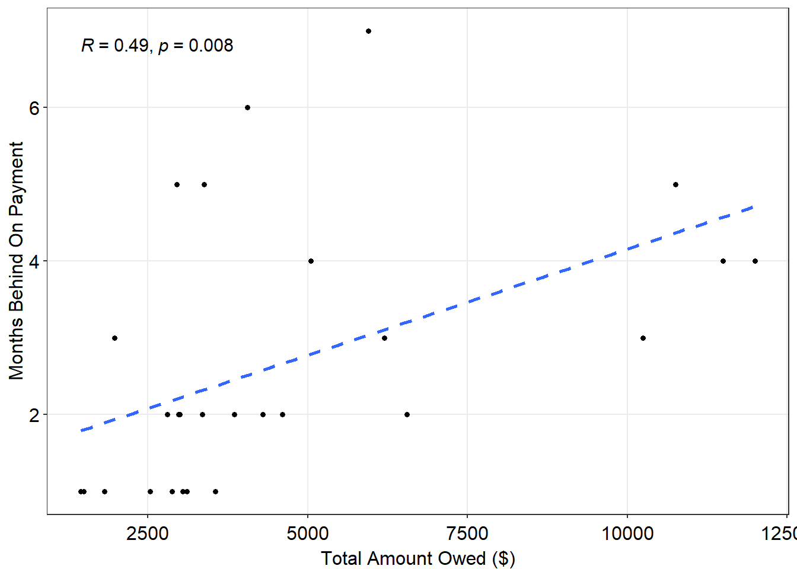
Analysis 1: Mediation Agreement vs No Mediation Agreement
Rationale: There could be interesting differences in the cases that reach an agreement at mediation vs the ones that do not. For example, it is possible that the cases where an agreement is reached are less “severe” or dire in terms of factors such as the Total Amount Owed or the number of months the tenant is behind on payment. If tenants have higher incomes, that could represent a higher ability to pay, which could also affect the likelihood that a mediation agreement can be reached.
Predictions:
- Total Amount Owed and Months Behind should be smaller for the cases that reach an agreement at mediation vs no agreement.
- Higher monthly incomes should be larger for cases that reach an agreement vs not.
| mediation_agreement | n | MonthlyRent | MonthsBehind | AmountOwed | MonthlyIncome |
|---|---|---|---|---|---|
| No | 3 | 2432.000 | 2.333333 | 6084.000 | 2861.111 |
| Yes | 36 | 1834.318 | 2.863636 | 4439.273 | 2981.548 |
Welch Two Sample t-test
data: Monthly_Rent by mediation_agreement
t = 1.1245, df = 2.6387, p-value = 0.3526
alternative hypothesis: true difference in means between group No and group Yes is not equal to 0
95 percent confidence interval:
-1232.666 2428.029
sample estimates:
mean in group No mean in group Yes
2432.000 1834.318 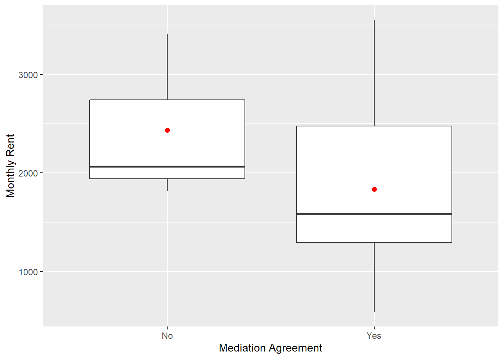
Welch Two Sample t-test
data: Months_Behind by mediation_agreement
t = -0.6862, df = 3.5713, p-value = 0.5345
alternative hypothesis: true difference in means between group No and group Yes is not equal to 0
95 percent confidence interval:
-2.781464 1.720858
sample estimates:
mean in group No mean in group Yes
2.333333 2.863636 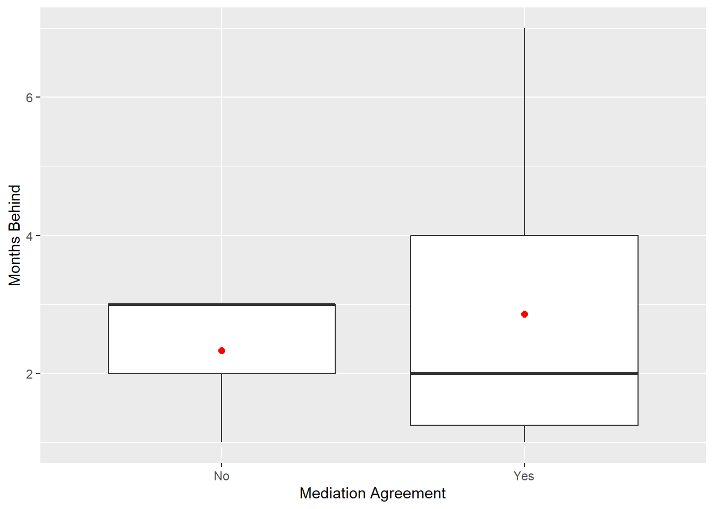
Welch Two Sample t-test
data: Total_Rent_Owed by mediation_agreement
t = 0.65368, df = 2.2919, p-value = 0.5728
alternative hypothesis: true difference in means between group No and group Yes is not equal to 0
95 percent confidence interval:
-7961.59 11251.04
sample estimates:
mean in group No mean in group Yes
6084.000 4439.273 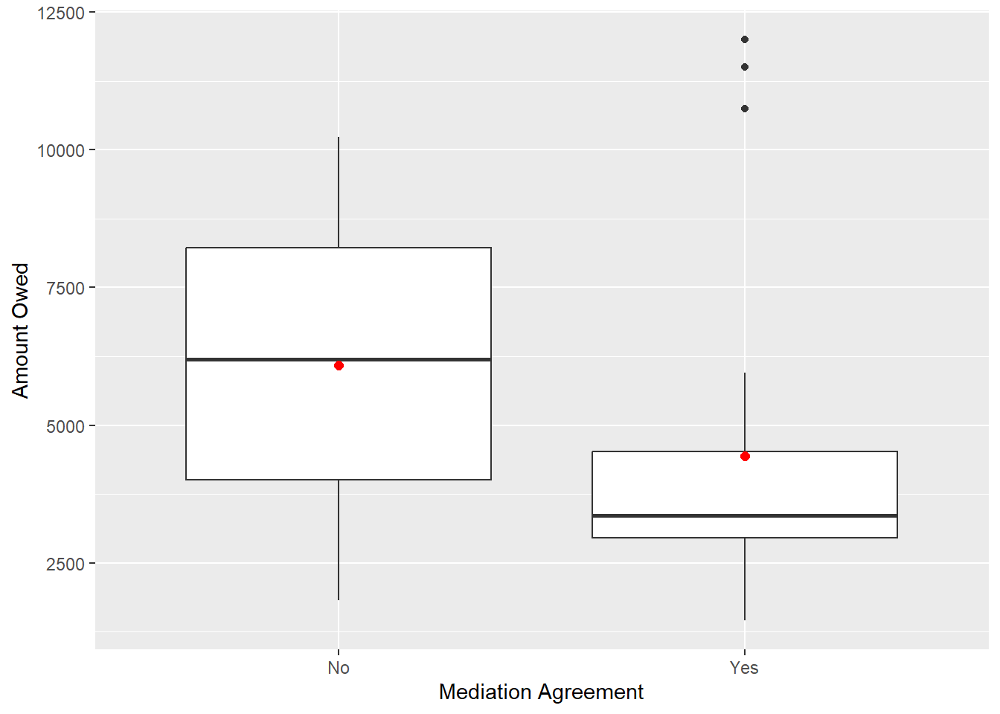
Welch Two Sample t-test
data: monthly_income by mediation_agreement
t = -0.077453, df = 2.3839, p-value = 0.9443
alternative hypothesis: true difference in means between group No and group Yes is not equal to 0
95 percent confidence interval:
-5877.472 5636.599
sample estimates:
mean in group No mean in group Yes
2861.111 2981.548 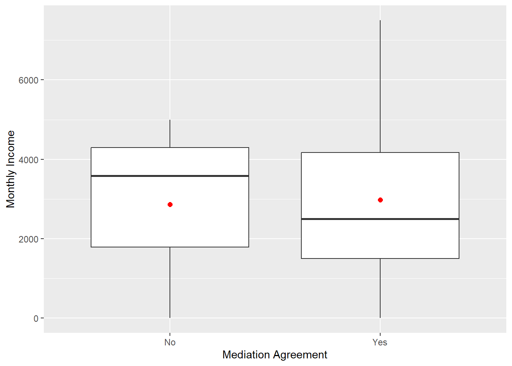
Analysis 2: Payment Plan vs No Payment Plan
Rationale: Similar to the rationale above, there could be systematic differences in the types of agreements that are reached at mediation. Here we are comparing mediations that result in payment plans vs non-payment plan agreements.
Predictions:
- Total Amount Owed and Months Behind should be smaller for the cases that reach a payment plan vs agreements that are not a payment plan (usually an agreement to move-out).
- Higher monthly incomes should be larger for cases where a payment plan is reached, indicating an increased ability to pay and keep up with a monthly payment plan.
| payment_plan | n | MonthlyRent | MonthsBehind | AmountOwed | MonthlyIncome |
|---|---|---|---|---|---|
| No | 7 | 2759.667 | 2.333333 | 6400.333 | 4604.167 |
| Yes | 29 | 1688.211 | 2.947368 | 4129.632 | 2599.755 |
Welch Two Sample t-test
data: Monthly_Rent by payment_plan
t = 3.4349, df = 5.4758, p-value = 0.01605
alternative hypothesis: true difference in means between group No and group Yes is not equal to 0
95 percent confidence interval:
290.1227 1852.7896
sample estimates:
mean in group No mean in group Yes
2759.667 1688.211 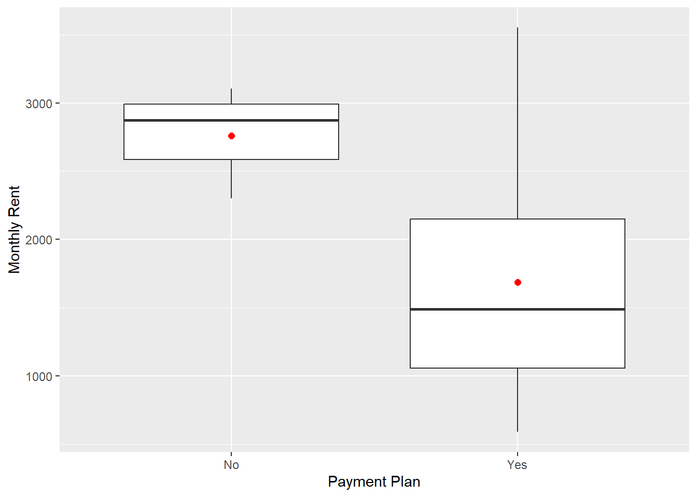
Welch Two Sample t-test
data: Months_Behind by payment_plan
t = -0.6242, df = 3.0755, p-value = 0.5757
alternative hypothesis: true difference in means between group No and group Yes is not equal to 0
95 percent confidence interval:
-3.701597 2.473527
sample estimates:
mean in group No mean in group Yes
2.333333 2.947368 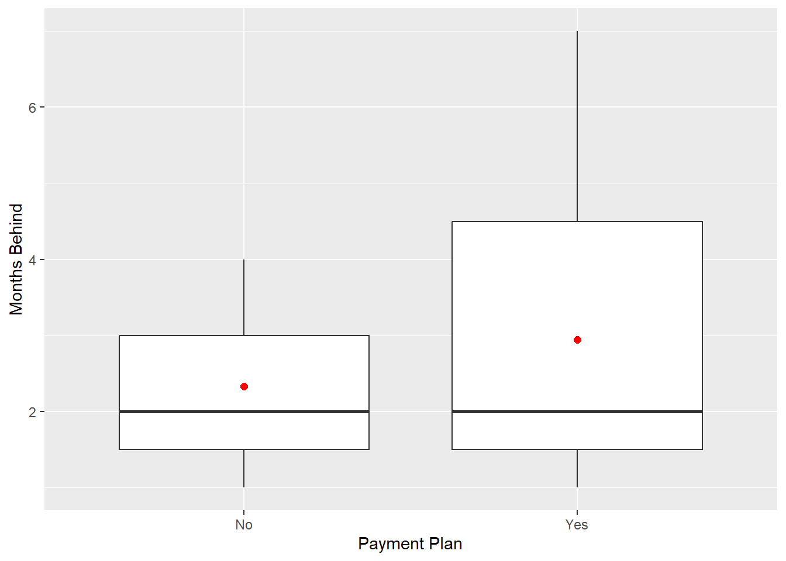
Welch Two Sample t-test
data: Total_Rent_Owed by payment_plan
t = 0.85299, df = 2.2514, p-value = 0.4747
alternative hypothesis: true difference in means between group No and group Yes is not equal to 0
95 percent confidence interval:
-8040.605 12582.008
sample estimates:
mean in group No mean in group Yes
6400.333 4129.632 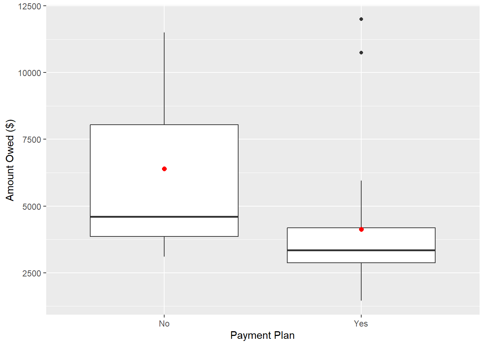
Welch Two Sample t-test
data: monthly_income by payment_plan
t = 1.4517, df = 3.6999, p-value = 0.2257
alternative hypothesis: true difference in means between group No and group Yes is not equal to 0
95 percent confidence interval:
-1954.795 5963.619
sample estimates:
mean in group No mean in group Yes
4604.167 2599.755 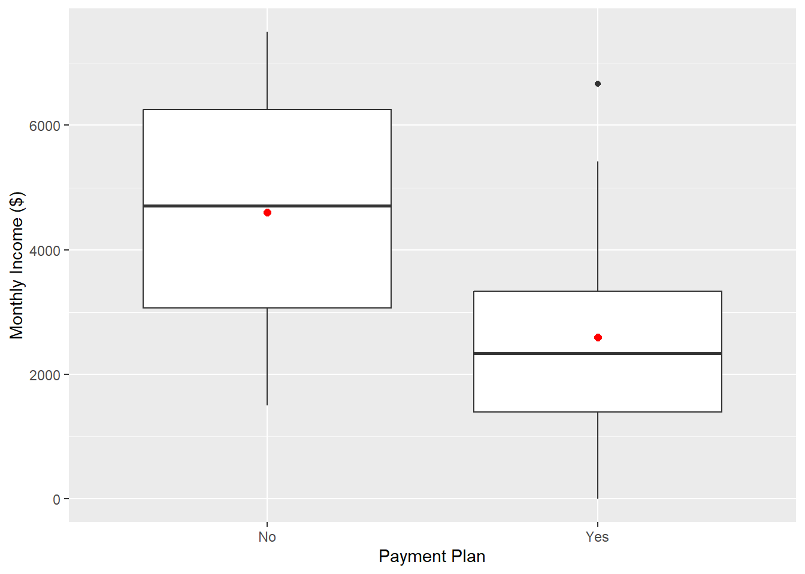
Analysis 3: Current Employment Status
Predictions:
- Clients who are currently employed should have a higher monthly income and should have an income stream, resulting in a lower amount of total rent owed and less average months behind in payment.
| currently_employed | n | MonthlyRent | MonthsBehind | AmountOwed | MonthlyIncome |
|---|---|---|---|---|---|
| 0 | 9 | 1900.429 | 2.714286 | 3148.0 | 3271.296 |
| 1 | 15 | 2078.400 | 2.300000 | 4972.9 | 2783.611 |
Welch Two Sample t-test
data: Monthly_Rent by currently_employed
t = -0.32596, df = 8.6018, p-value = 0.7522
alternative hypothesis: true difference in means between group 0 and group 1 is not equal to 0
95 percent confidence interval:
-1421.870 1065.927
sample estimates:
mean in group 0 mean in group 1
1900.429 2078.400 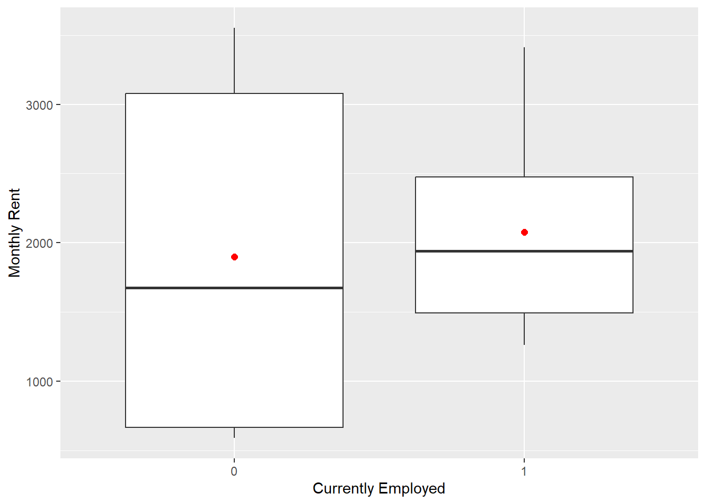
Welch Two Sample t-test
data: Months_Behind by currently_employed
t = 0.48163, df = 8.6754, p-value = 0.642
alternative hypothesis: true difference in means between group 0 and group 1 is not equal to 0
95 percent confidence interval:
-1.542702 2.371273
sample estimates:
mean in group 0 mean in group 1
2.714286 2.300000 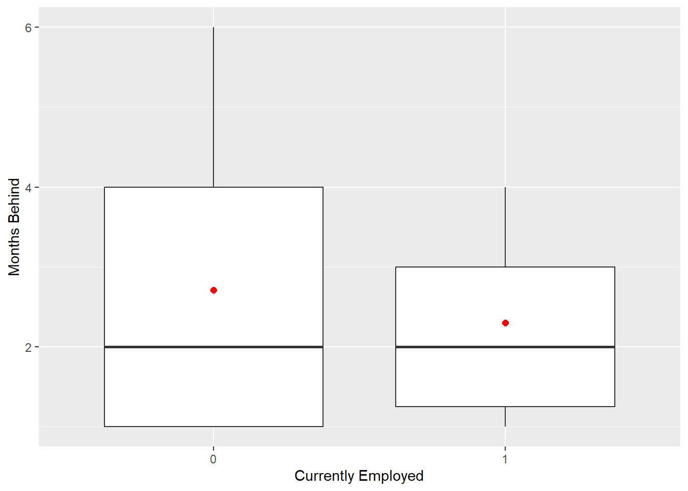
Welch Two Sample t-test
data: Total_Rent_Owed by currently_employed
t = -1.5762, df = 9.8072, p-value = 0.1467
alternative hypothesis: true difference in means between group 0 and group 1 is not equal to 0
95 percent confidence interval:
-4411.5012 761.7012
sample estimates:
mean in group 0 mean in group 1
3148.0 4972.9 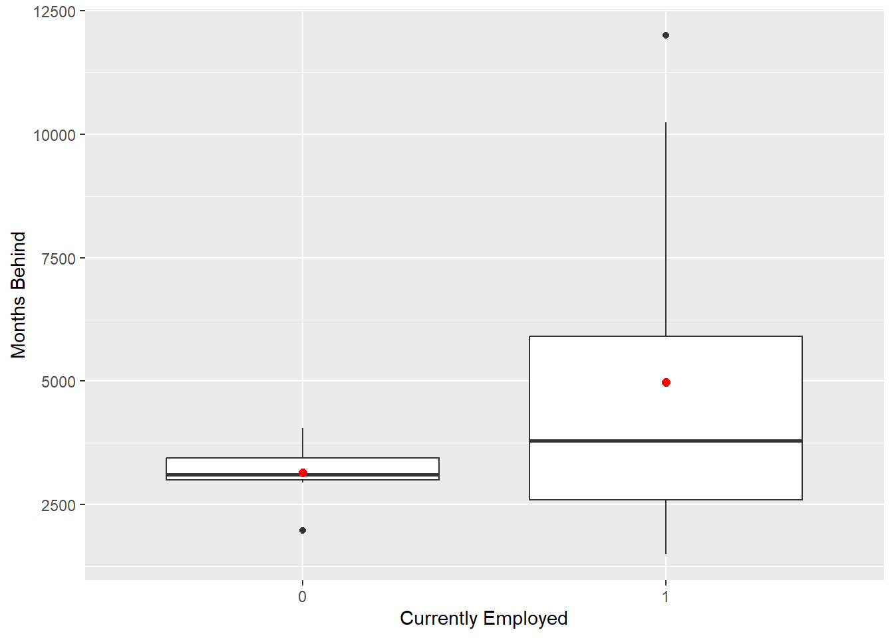
Welch Two Sample t-test
data: monthly_income by currently_employed
t = 0.49594, df = 12.336, p-value = 0.6287
alternative hypothesis: true difference in means between group 0 and group 1 is not equal to 0
95 percent confidence interval:
-1648.425 2623.795
sample estimates:
mean in group 0 mean in group 1
3271.296 2783.611 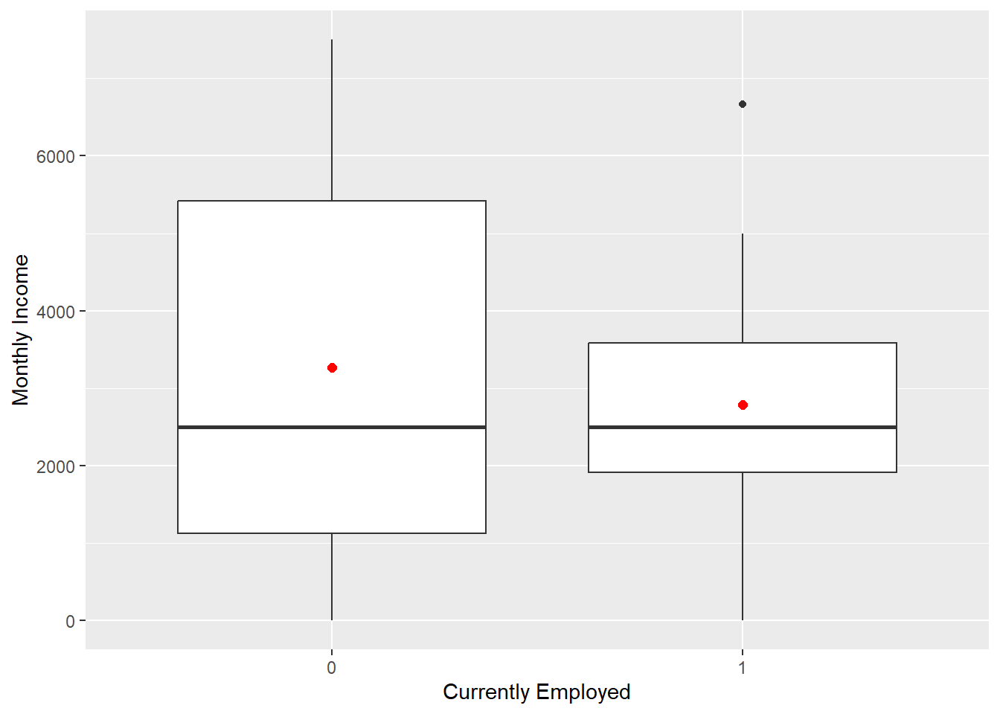
Analysis 4: Eviction Filing
Predictions:
- Cases where eviction is filed should have higher amounts owed and longer amounts of time behind on payment compared to cases where eviction is not filed.
NOTE: These data will not be meaningful because these outcomes have been simulated.
| eviction_filed | n | MonthlyRent | MonthsBehind | AmountOwed |
|---|---|---|---|---|
| 0 | 108 | 1853.560 | 2.555556 | 4989.399 |
| 1 | 330 | 1880.318 | 2.666667 | 4896.950 |
Welch Two Sample t-test
data: Monthly_Rent by eviction_filed
t = -0.19498, df = 241.55, p-value = 0.8456
alternative hypothesis: true difference in means between group 0 and group 1 is not equal to 0
95 percent confidence interval:
-297.0804 243.5654
sample estimates:
mean in group 0 mean in group 1
1853.560 1880.318 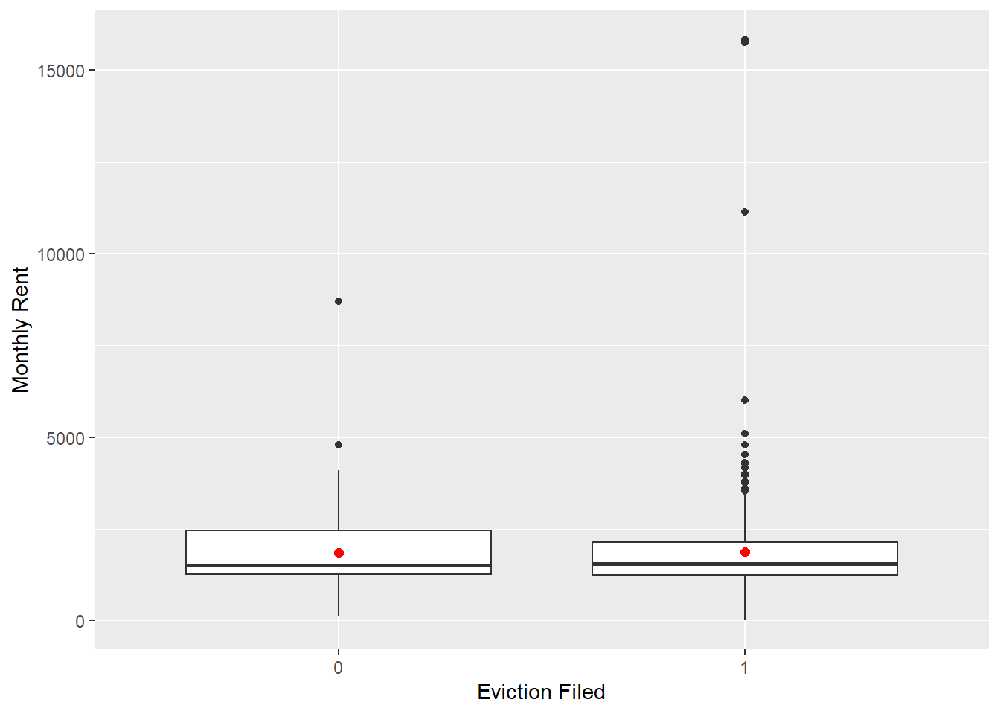
Welch Two Sample t-test
data: Months_Behind by eviction_filed
t = -0.33754, df = 247.9, p-value = 0.736
alternative hypothesis: true difference in means between group 0 and group 1 is not equal to 0
95 percent confidence interval:
-0.7594468 0.5372246
sample estimates:
mean in group 0 mean in group 1
2.555556 2.666667 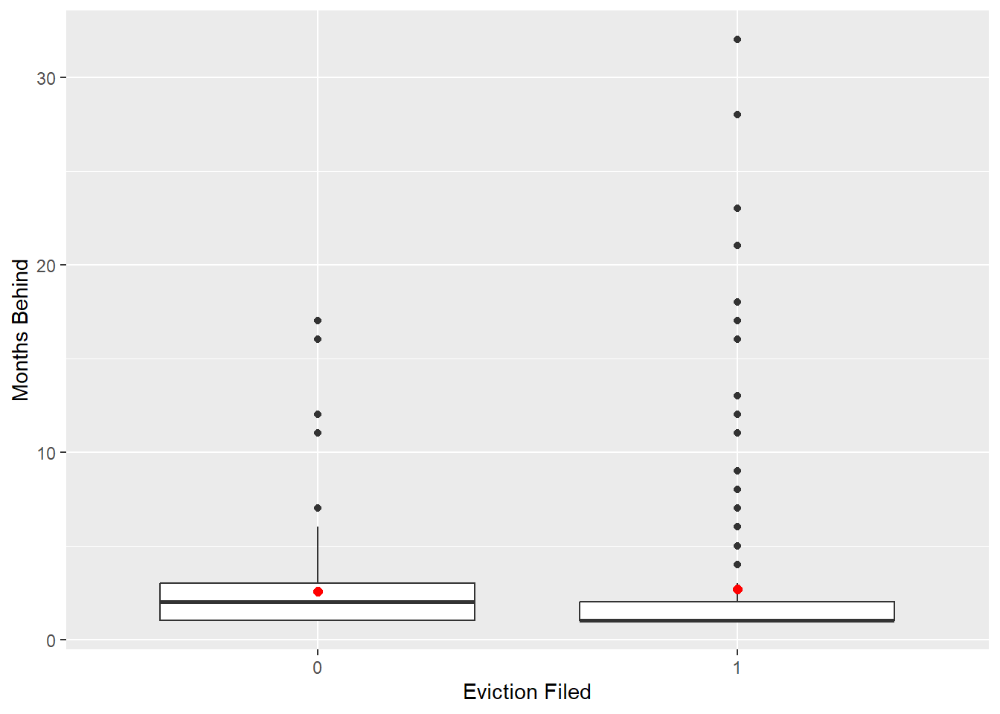
Welch Two Sample t-test
data: Total_Rent_Owed by eviction_filed
t = 0.081658, df = 175.66, p-value = 0.935
alternative hypothesis: true difference in means between group 0 and group 1 is not equal to 0
95 percent confidence interval:
-2141.905 2326.802
sample estimates:
mean in group 0 mean in group 1
4989.399 4896.950 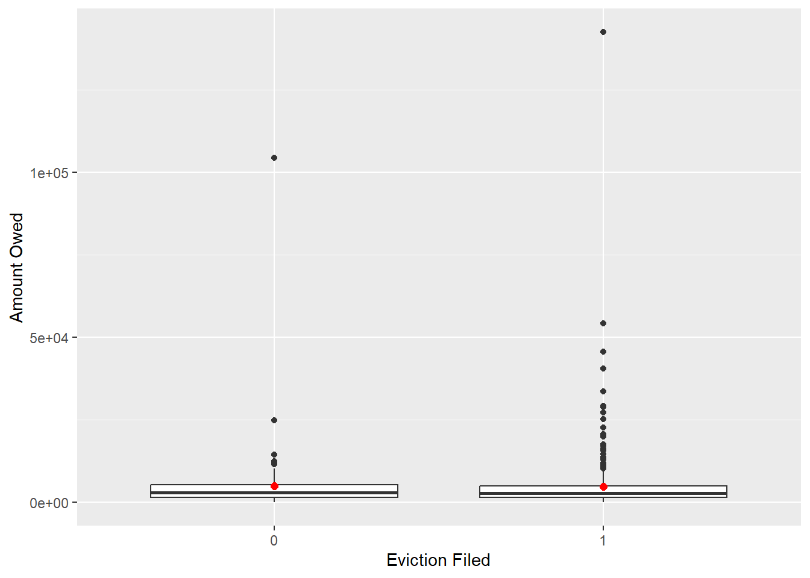
Welch Two Sample t-test
data: monthly_income by eviction_filed
t = -1.7661, df = 3.3817, p-value = 0.1651
alternative hypothesis: true difference in means between group 0 and group 1 is not equal to 0
95 percent confidence interval:
-4796.770 1233.228
sample estimates:
mean in group 0 mean in group 1
1666.667 3448.438 Analysis 5: Summary Possession Judgment
Predictions:
- Cases whose final outcome is a summary possession judgment should have higher amounts owed and longer amounts of time behind on payment compared to cases that do not result in a summary possession judgment. NOTE: These data are simulated and are not meaningful.
| summary_possession | n | MonthlyRent | MonthsBehind | AmountOwed |
|---|---|---|---|---|
| 0 | 175 | 1930.534 | 2.645714 | 5579.315 |
| 1 | 263 | 1835.917 | 2.634981 | 4480.869 |
Welch Two Sample t-test
data: Monthly_Rent by summary_possession
t = 0.6643, df = 344.75, p-value = 0.5069
alternative hypothesis: true difference in means between group 0 and group 1 is not equal to 0
95 percent confidence interval:
-185.5265 374.7612
sample estimates:
mean in group 0 mean in group 1
1930.534 1835.917 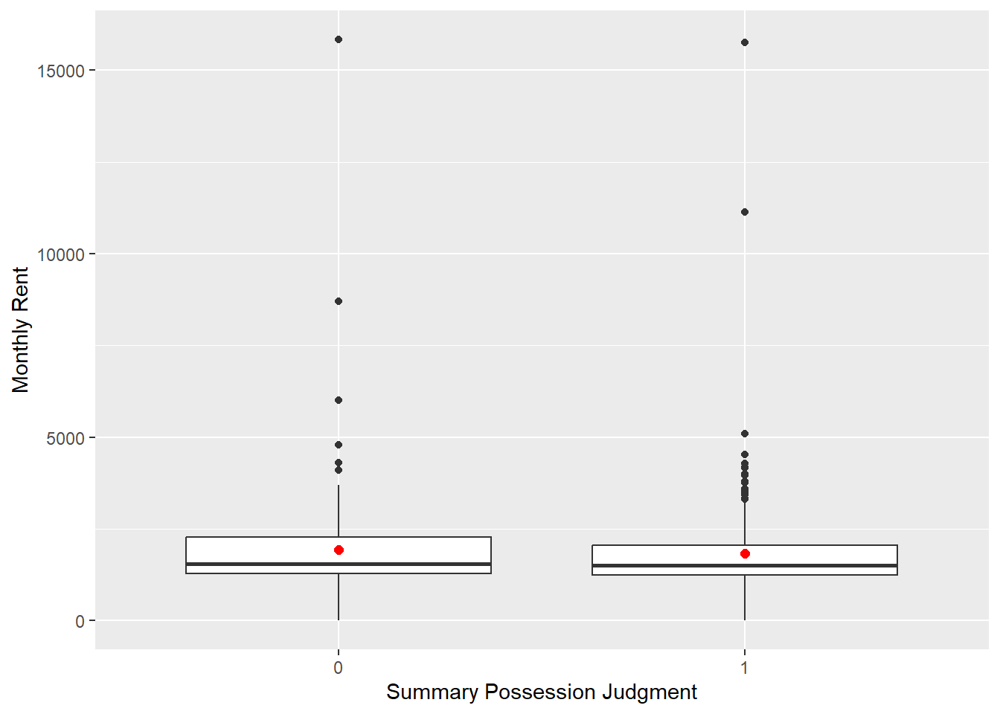
Welch Two Sample t-test
data: Months_Behind by summary_possession
t = 0.033493, df = 428.54, p-value = 0.9733
alternative hypothesis: true difference in means between group 0 and group 1 is not equal to 0
95 percent confidence interval:
-0.6191356 0.6406022
sample estimates:
mean in group 0 mean in group 1
2.645714 2.634981 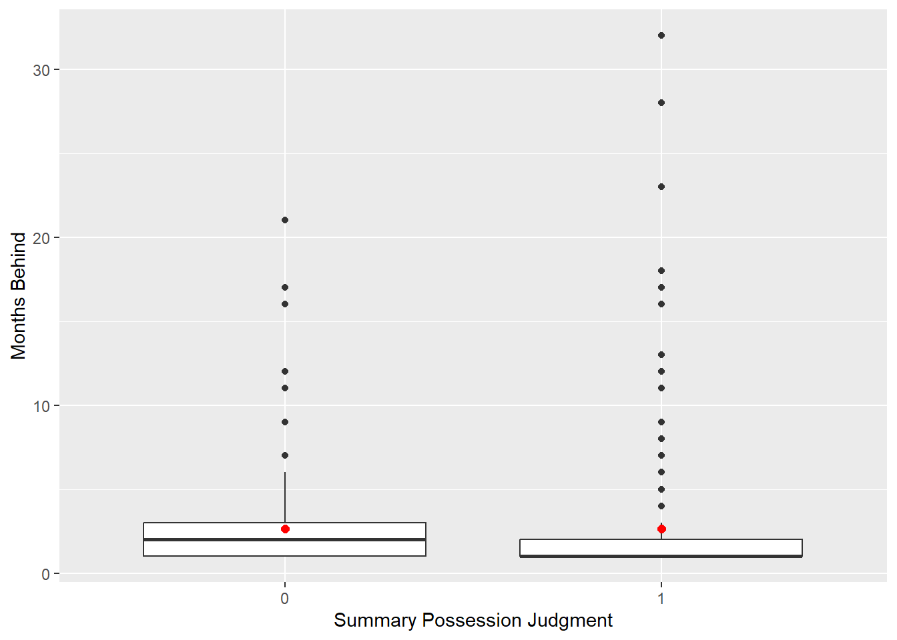
Welch Two Sample t-test
data: Total_Rent_Owed by summary_possession
t = 1.0012, df = 233.66, p-value = 0.3178
alternative hypothesis: true difference in means between group 0 and group 1 is not equal to 0
95 percent confidence interval:
-1063.101 3259.992
sample estimates:
mean in group 0 mean in group 1
5579.315 4480.869 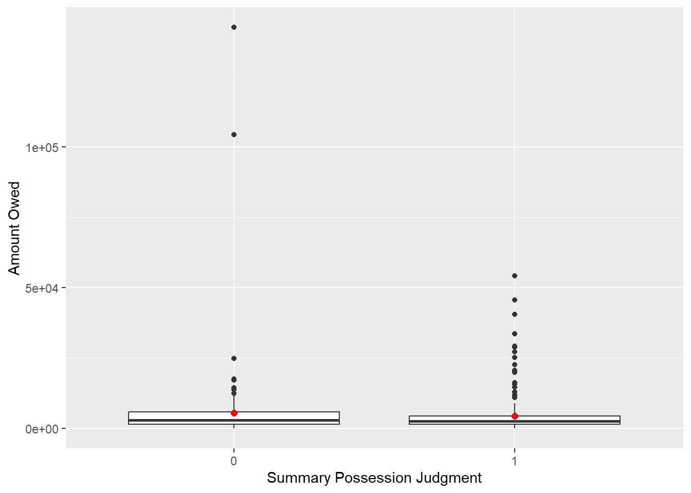
Welch Two Sample t-test
data: monthly_income by summary_possession
t = -0.44007, df = 7.4011, p-value = 0.6725
alternative hypothesis: true difference in means between group 0 and group 1 is not equal to 0
95 percent confidence interval:
-2860.443 1954.491
sample estimates:
mean in group 0 mean in group 1
2833.333 3286.310 Analysis 6: Success of Payment Plans
| payment_plan_success | n | MonthlyRent | MonthsBehind | AmountOwed | MonthlyIncome |
|---|---|---|---|---|---|
| 0 | 6 | 1773.000 | 3.333333 | 5433.667 | 2500.0 |
| 1 | 13 | 1649.077 | 2.769231 | 3527.769 | 2962.5 |
A successful payment plan is a mediated plan that does not go to court on an eviction filing for non-payment of rent. By this definition, 13 total plans were successful, As a percentage, 68% of all payment plans were successful.
Predictions:
- Successful payment plans will involve smaller amounts of back rent owed and a shorter amount of time late on payment vs unsuccessful plans.
- The household incomes for successful payment plans should also be higher than for unsuccessful plans. NOTE: This is simulated data.
Welch Two Sample t-test
data: Monthly_Rent by payment_plan_success
t = 0.305, df = 12.127, p-value = 0.7655
alternative hypothesis: true difference in means between group 0 and group 1 is not equal to 0
95 percent confidence interval:
-760.3191 1008.1652
sample estimates:
mean in group 0 mean in group 1
1773.000 1649.077 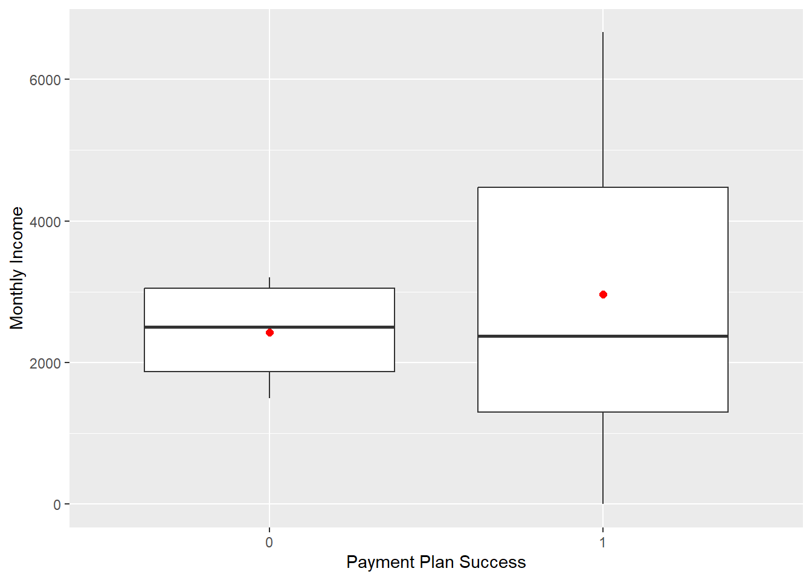
Welch Two Sample t-test
data: Months_Behind by payment_plan_success
t = 0.55417, df = 8.4838, p-value = 0.5938
alternative hypothesis: true difference in means between group 0 and group 1 is not equal to 0
95 percent confidence interval:
-1.760129 2.888334
sample estimates:
mean in group 0 mean in group 1
3.333333 2.769231 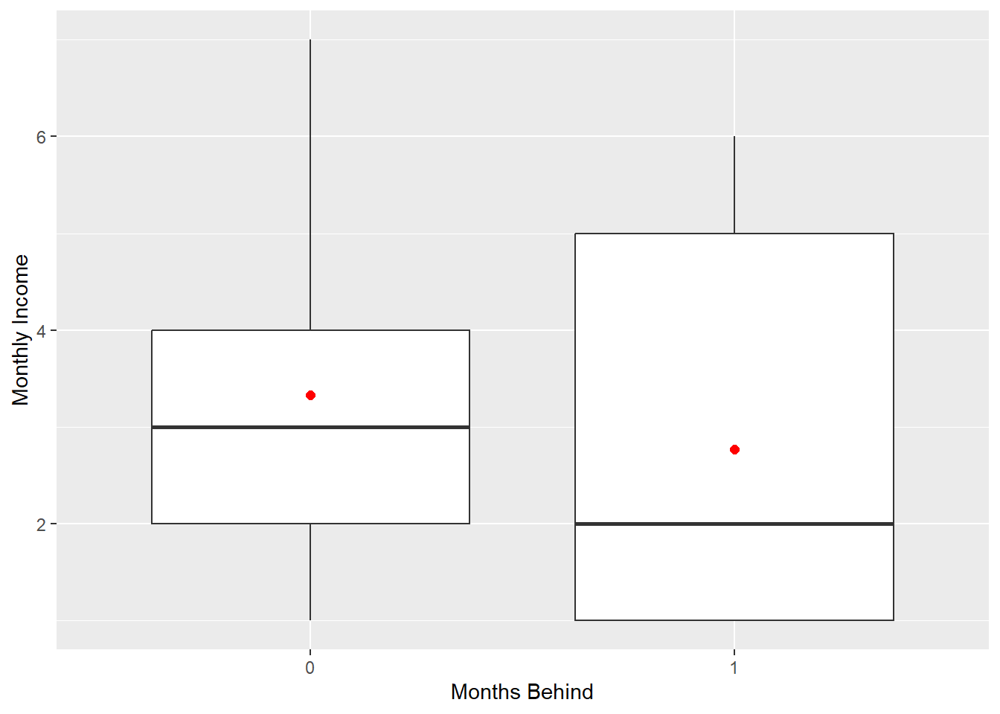
Welch Two Sample t-test
data: Total_Rent_Owed by payment_plan_success
t = 1.2049, df = 6.9522, p-value = 0.2676
alternative hypothesis: true difference in means between group 0 and group 1 is not equal to 0
95 percent confidence interval:
-1839.600 5651.395
sample estimates:
mean in group 0 mean in group 1
5433.667 3527.769 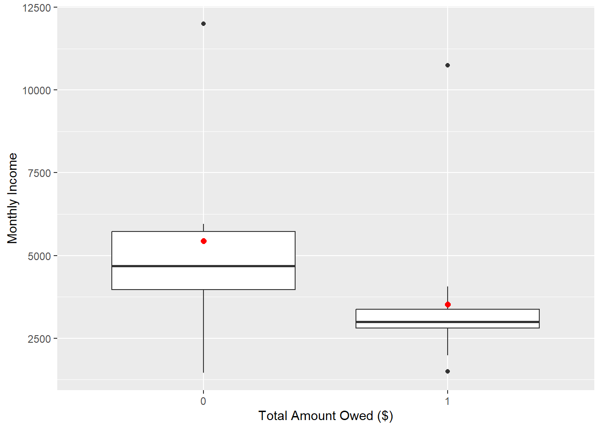
Welch Two Sample t-test
data: monthly_income by payment_plan_success
t = -0.67984, df = 11.99, p-value = 0.5095
alternative hypothesis: true difference in means between group 0 and group 1 is not equal to 0
95 percent confidence interval:
-2260.276 1185.276
sample estimates:
mean in group 0 mean in group 1
2425.0 2962.5 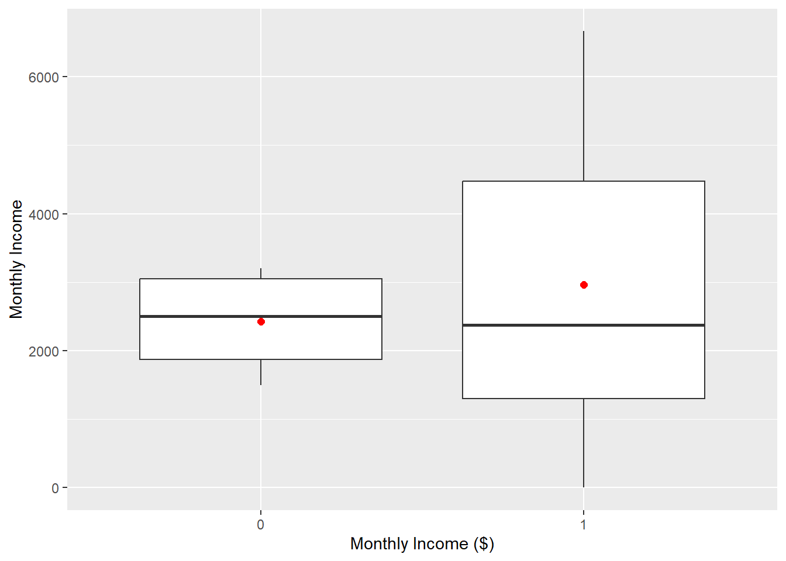
Analysis 7: Predicting likelihood of eviction / payment plan / mediation agreement (Logistic Regression)
Need more data before presentable.
Predictions:
- Total Amount of Rent Owed, Monthly Income, Monthly Rent of the Unit, Current Employment Status, Lost employment in the past year, Household Size, Gender, Age, and Race will all significantly be successful predictors of the following outcomes:
Mediation agreement is reached (Yes/No) Tenant can stay in the unit (Stay/Vacate) Whether eviction is filed (Yes/No) Whether a case receives a summary possession judgment (Yes/No).
Analysis 8: Time to eviction filing by case type
Time to Eviction Filing from Notice Date: Date of Eviction Filing - Notice_Date Time to Eviction Filing from Mediation: Date of Eviction Filing - mediation_date
Predictions:
- Average time to Eviction Filing is longer if there is a mediation agreement, payment plan vs no payment plan, rental assistance vs none.
- The average time to filing will also be longer for HUD cases (30 day notice vs 10).
Analysis 9: Monthly or Quarterly Numbers for Notices/Mediations/Eviction/Summary Possession
To come with more data, maybe after 6 months
Analysis 10: Sankey Graph
WARNING: MESSY AND NUMBERS MIGHT NOT ADD Up [might use sankeymatic instead]